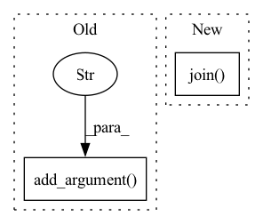

Pattern ID :12951
Before Change
parser.add_argument(
"source_path", type=str, help="like cnn_dm/test.source",
)
parser.add_argument(
"output_path" , type=str, help="where to save summaries",
)
parser.add_argument(
"model_name", type=str, default="bart-large-cnn", help="like bart-large-cnn",
)
parser.add_argument(After Change
def run_generate(args):
mbart = MBART.load_from_checkpoint(os.path.join( args.ckpt_path, args.ckpt_name) )
mbart.eval()
mbart = mbart.to(args.device)
tokenizer = mbart.tokenizer.from_pretrained(args.model_name)In pattern: SUPERPATTERN
Frequency: 3
Non-data size: 2
Instances Fragment ID: 43617533
Project Name: stanford-oval/genienlp
Commit Name: 6b56b4f2cb4597c95a39218e203ffdc7b96c4408
Time: 2020-04-27
Author: mehrad@stanford.edu
File Name: genienlp/paraphrase/evaluate_bart.py
M Class Name: AnonimousClass
N Class Name: AnonimousClass
M Method Name: run_generate(1)
N Method Name: run_generate(0)
M Parent Class:
N Parent Class:
M File Name: genienlp/paraphrase/evaluate_bart.py
N File Name: genienlp/paraphrase/evaluate_bart.py
M Start Line: 63
M End Line: 81
N Start Line: 45
N End Line: 54
Before Change
help="The columns to write to output. By default, we output all columns.")
parser.add_argument("--id_column", type=int, default=0,
help="The column index in the input file that contains the unique id")
parser.add_argument("--utterance_column" , type=int, default=1,
help="The column index in the input file that contains the natural utterance")
parser.add_argument("--thingtalk_column", type=int, default=2,
help="The column index in the input file that contains the ThingTalk code.")
// These arguments are effective only if --transformation=get_wrong_thingtalkAfter Change
if should_skip:
continue
if args.remove_duplicates:
normalized_example = re.sub("\s+", "", "".join( [o[i] for i in args.no_duplication_columns]) )
print(normalized_example)
if normalized_example in seen_examples:
duplicate_count += 1 Fragment ID: 43617545
Project Name: stanford-oval/genienlp
Commit Name: b00932ccec7cfb8f76bc7d2651b287ccc15af7bc
Time: 2020-04-24
Author: s.j.semnani@gmail.com
File Name: genienlp/data_manipulation_scripts/transform_dataset.py
M Class Name: AnonimousClass
N Class Name: AnonimousClass
M Method Name: main(0)
N Method Name: main(0)
M Parent Class:
N Parent Class:
M File Name: genienlp/data_manipulation_scripts/transform_dataset.py
N File Name: genienlp/data_manipulation_scripts/transform_dataset.py
M Start Line: 10
M End Line: 130
N Start Line: 35
N End Line: 153
Before Change
parser.add_argument("--resume", default=None,
help="saved model path to last training epoch")
parser.add_argument("--max_epoch", default=None)
parser.add_argument("--data_root_dir" ,
default=r"/home/rongfan/11-personality_traits/DeepPersonality/datasets",
help="path to your dataset")
args = parser.parse_args()
cfg.DATA_ROOT = args.data_root_dir if args.data_root_dir else cfg.DATA_ROOT
cfg.LR_INIT = args.lr if args.lr else cfg.LR_INITAfter Change
def main(args, cfg):
setup_seed(12345)
cfg = setup_config(args, cfg)
res_dir = os.path.join( "..", "results")
logger, log_dir = make_logger(res_dir)
logger.info("file_name: \n{}\n".format(__file__))
train_loader = make_data_loader(cfg, mode="train") Fragment ID: 43617552
Project Name: liaorongfan/deeppersonality
Commit Name: 0821f27046c495d9caacae35ed9d75fb3ed99634
Time: 2021-07-12
Author: 15670381505@163.com
File Name: experements/1_deep_bimodal_regression_image.py
M Class Name: AnonimousClass
N Class Name: AnonimousClass
M Method Name: main(2)
N Method Name: main(0)
M Parent Class:
N Parent Class:
M File Name: experements/1_deep_bimodal_regression_image.py
N File Name: experements/1_deep_bimodal_regression_image.py
M Start Line: 22
M End Line: 63
N Start Line: 16
N End Line: 38